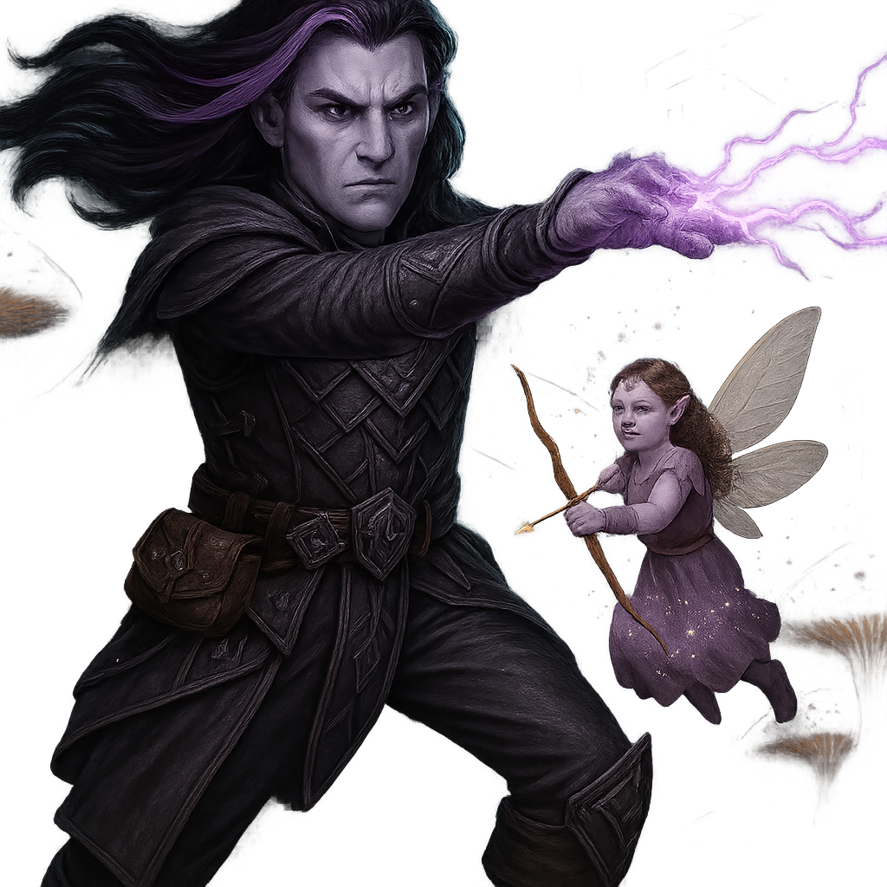

🎲 Family Board Games
🏆 Family Favorites — Ranked
-
1The party game the whole family plays at reunions. Inevitably causes arguments. Grandpa James is inexplicably the best clue giver. No one knows how.Party
-
2The perfect intro game. Every holiday season someone new gets hooked on this one. The Europe map is the family's preferred version.Beginner Friendly
-
3The gateway drug. Still gets pulled out when cousins visit who've never played a "real" board game. "I got wood for sheep" never gets old.Gateway
-
4The classic word battle. Arguments about whether proper nouns count are a family institution. Dictionary always within arm's reach.Classic
-
5Pure chaos in a small box. Fast-paced, loud, and fiercely competitive. Someone always ends up yelling. Shuffling speed is a life skill.Fast & Furious
🃏 Also in the Collection
♠️2–6 Players
Spades
Classic Card Game · Partnership Trick-Taking
A family staple. Partners must bid and make their contracts or face the wrath of a well-timed sandbag. Nothing builds trust like a good spades partner.
★★★★★Family Classic
🍌2–13 Players
Bananagrams Inc. · Word Tile Race
Faster than Scrabble, louder than Scrabble, and somehow even more competitive. "Peel!" is a battle cry in this household. Great for all ages.
★★★★All Ages
⚔️ High-Intensity Board Games
For when a casual evening turns into an all-day campaign. These demand commitment, strategy, table space, and adequate snacks. Possibly tears.
⚔️1–4 Players
Cephalofair Games · Dungeon Crawler Campaign
The crown jewel of the game shelf. 80+ hours logged across two campaigns. Heavy, complex, and absolutely worth every minute. Also exists as a full PC video game.
💬 "We need to finish the second campaign." — Everyone, always
★★★★★Epic Campaign
🌌3–6 Players
Fantasy Flight Games · Space Opera · 6–10 Hours
The most ambitious board game ever made. Played once — it took 9 hours. Three alliances formed and broken. One person cried. 10/10.
💬 "We need a whole weekend for this." — Michael
★★★★★Epic
👑3–6 Players
Fantasy Flight Games · Area Control · 2nd Edition
Treachery, alliance-breaking, and winter ravaging the Seven Kingdoms. The Lannister player always betrays everyone and somehow wins. Trust no one.
💬 "When you play the game of thrones…" — applicable every time
★★★★½Political
🤖2+ Players
Catalyst Game Labs · Tactical Mech Combat
Giant stompy mechs slugging it out across hex battlefields. The rulebook is a commitment. The lore is a universe. The gameplay is deeply satisfying tactical warfare.
★★★★Tactical
🏯2–5 Players
Queen Games · Area Control · Feudal Japan
Control castles, temples, and rice paddies across feudal Japan. Battle outcomes resolved via the infamous Shogun Tower — randomly fair and endlessly dramatic.
★★★★Strategic
⚔️ Role-Playing Games
🐉 Chuck's Current Campaign — D&D 5e 2024

✦ Chuck's Character · D&D 5e 2024
Krynn Thal'zath
Drow Elf · Warlock 2 · Mulhorandi Tomb Raider
Born in the hidden jungle haven of Ilyth'Varan, Krynn left behind a world of balanced darkness to chase answers buried beneath ancient ruins. A pact with a nameless intelligence — Zhaun'ylith, The Web Beyond Worlds — gave him power framed as purpose. Now a newly minted university graduate, he's ready to join his first expedition.
📜 Read Full Backstory & Character Sheet →📜 Other RPG Systems We Play
🐲Tabletop RPG
Pathfinder 2e
Paizo Publishing · Tactical Fantasy RPG
Played the Abomination Vaults adventure path in 2024. More crunchy rules than D&D — David prefers it for tactical depth, Michael likes D&D's "theater of the mind" feel. They will argue about this forever.
★★★★½Tactical
🌑Sci-Fi RPG
Stars Without Number
Sine Nomine Publishing · Sci-Fi Sandbox
Old-school science fiction RPG with a sector-building sandbox approach. Michael ran a 6-session campaign set in a dying star cluster. Still the family's favorite sci-fi RPG experience.
★★★★Sci-Fi
🗺️On Wishlist
Forbidden Lands
Free League Publishing · Survival Fantasy
A grim, survival-focused fantasy RPG with hex-crawl exploration. On the group's wishlist for the next campaign after The Sunken Vale wraps up.
—Upcoming
💍Tabletop RPG
Iron Crown Enterprises · Classic Fantasy RPG
Set in Tolkien's Third Age using the Rolemaster percentile system. Deeply faithful to the lore, richly detailed, and genuinely lethal. A labor of love for any Tolkien devotee.
★★★★Tolkien
⛩️Tabletop RPG
Fantasy Games Unlimited · Feudal Japan RPG
One of the earliest RPGs set in feudal Japan. Samurai, ninja, shugenja, and monks navigate honor, conflict, and the supernatural. A classic that holds up remarkably well.
★★★★Classic
🚀Tabletop RPG
Mongoose Publishing · Sci-Fi Sandbox RPG
The grandfather of science fiction tabletop RPGs. Explore the Third Imperium, trade among the stars, and try not to die during character creation. Classic hard sci-fi in the best possible way.
★★★★½Sci-Fi
⭐ Star Wars
🏆 Family Film Rankings — The Definitive List (Debated Annually)
-
1Rogue One (2016)The dark horse that exceeded everyone's expectations. The Vader hallway scene is the greatest minute in Star Wars history. No notes.★★★★★
-
2The Empire Strikes Back (1980)Universally agreed upon. The greatest sequel ever made. "I am your father" still gives everyone chills even knowing it's coming.★★★★★
-
3A New Hope (1977)Where it all started. James saw this in theaters in 1977 and brought Michael to see the re-release in 1997. The original is sacred.★★★★★
-
4Return of the Jedi (1983)Controversial placement — some say top 3. The Ewoks remain a point of contention at every reunion. James defends the Ewoks and will not be moved.★★★★½
-
5Revenge of the Sith (2005)"Hello there." The only prequel that earns its spot. The opera scene is genuinely great cinema, and the tragedy of Anakin lands when you've watched everything first.★★★★
📺 Star Wars TV — Ranked
| Show | Seasons | Family Score | Verdict |
|---|---|---|---|
| Andor | 2 | ★★★★★ | Best Star Wars content in 30 years. Grounded, political, brilliant. Watch it twice. |
| The Mandalorian S1–S2 | 2 (of 3) | ★★★★★ | Baby Yoda. Need we say more? Season 3 is… present. |
| The Clone Wars | 7 | ★★★★½ | The Ahsoka arc in Season 7 is some of the best Star Wars ever created. |
| Ahsoka | 1 | ★★★½ | Beautiful fan service for Clone Wars fans. Others may be lost. |
| Obi-Wan Kenobi | 1 | ★★★ | Ewan McGregor is wonderful; the rest is mixed. Worth it for the performances. |
| The Book of Boba Fett | 1 | ★★½ | Mandalorian episodes were incredible. Boba Fett episodes... existed. |
🖖 Star Trek
The Great Debate: Best Star Trek Captain
🚀 Kirk
- The original. The legend.
- Boldness over protocol
- Wins by sheer will
⭐ Pike
- The ideal commander
- Leads by example
- Strange New Worlds MVP
🖖 Picard
- Diplomat & philosopher
- "Make it so."
- The Inner Light. Enough said.
☕ Janeway
- Coffee. Determination.
- Got her crew home
- Would outlast them all
🌌 Sisko
- Most complex captain
- The Dominion War arc
- The Emissary
🔧 Archer
- Built the Federation
- No rulebook to follow
- Porthos deserved better
🖖TNG Era
The Next Generation
1987–1994 · 7 Seasons · 178 Episodes
The Gold Standard. Picard, Data, Riker, Troi, Worf, Geordi, and Crusher. Season 3 onward is some of the best sci-fi television ever produced.
💬 "Make it so." — Picard (and James at every family meeting)
★★★★★Essential
🌌DS9 Era
Deep Space Nine
1993–1999 · 7 Seasons · 176 Episodes
The boldest Trek ever made. A stationary setting, morally grey characters, serialized war arc, and the most underrated cast in franchise history. Gets better every rewatch.
★★★★★Bold
🚀TOS Era
The Original Series
1966–1969 · 3 Seasons · 79 Episodes
Where it all started. James watched this in first-run as a kid and passed it down. Kirk, Spock, and McCoy remain the defining Trek trio. Dated but endlessly charming.
💬 "My first fandom." — James Crews
★★★★½Classic
🌀VOY Era
Voyager
1995–2001 · 7 Seasons · 172 Episodes
The premise never fully delivered but Seven of Nine and the Doctor are all-time great characters. Patricia has a soft spot for this one. Inconsistent but has genuine classics.
★★★½Divisive
⭐New Era
Strange New Worlds
2022–Present · Paramount+
The best new Trek in decades. Returns to standalone episodic storytelling with a phenomenal cast. Anson Mount as Pike is a revelation. Unanimous family approval.
★★★★★New Favorite
🎬Films
Trek Films — Top Picks
Family Consensus Rankings
🥇 The Wrath of Khan
🥈 First Contact
🥉 The Voyage Home
4th: The Undiscovered Country
🥈 First Contact
🥉 The Voyage Home
4th: The Undiscovered Country
💬 "The even-numbered ones are better" rule: confirmed.
★★★★★Canon
🌌 Other Nerd Interests
💍Fantasy
Lord of the Rings
Books + Films · Extended Edition Only
The trilogy is watched every Thanksgiving weekend — extended editions only, all three in a row. Anyone who falls asleep during The Two Towers is gently mocked the following year.
💬 "One does not simply skip the extended editions." — David
★★★★★Annual Tradition
🐉Epic Fantasy
Game of Thrones / ASOIAF
Books & Show · Through Season 6
The show through Season 6 is celebrated; Seasons 7–8 are not discussed. The books are still awaited. George R.R. Martin owes the Crews family an apology and two novels.
★★★★★Complicated
🕷️Comics / Films
Marvel Cinematic Universe
Films · Phase 1–3 Unanimous · Phase 4+ Divisive
Phases 1–3 (through Endgame) are considered a collective masterpiece. Phase 4 has had some hits. The Infinity Saga watch marathon is a rite of passage for every Crews teenager.
★★★★½Superhero
⚡Sci-Fi
Dune (Books & Films)
Frank Herbert + Villeneuve Films
Michael read all six original Dune novels and considers it the greatest science fiction ever written. The Villeneuve films finally did the books justice. Both films are in the top 10 family movie list.
★★★★★Epic Sci-Fi
📚Sci-Fi Books
Sci-Fi & Fantasy Reading
Current Nerd Book List
📖 The Way of Kings — Brandon Sanderson (David)
📖 A Memory Called Empire — A. Martine (Jennifer)
📖 Project Hail Mary — Andy Weir (Michael)
📖 A Memory Called Empire — A. Martine (Jennifer)
📖 Project Hail Mary — Andy Weir (Michael)
★★★★★Reading
🎮 Video Games
🃏Card Game / Digital
Wise Wizard Games · Tactical Card Game
A brilliantly designed tactical deckbuilder pitting knights against impossible odds. Available physically and via digital platforms. Deep strategy in a compact package.
★★★★Tactical
🌐Browser MMO
Free-to-Play · Browser MMORPG
An old-school browser-based MMORPG with pixel art charm. Easy to pick up, surprisingly deep, and completely free. The perfect low-key time sink between bigger campaigns.
★★★½Free to Play
🔎PC RPG
ZA/UM · 2019 · Narrative RPG
A detective game unlike any other. Your skills, ideology, and psyche argue with each other while you fail to solve (or accidentally solve) a murder. One of the most original games ever made.
💬 "This game is literature." — Chuck
★★★★★Masterpiece
⚔️PC Game
Flaming Fowl Studios · 2021 · Tactical RPG
The beloved board game brought faithfully to PC with card-based combat and a sprawling campaign. Easier to set up than the physical version, equally punishing. Both versions are worth it.
★★★★½Campaign
🛸RTS Classic
Blizzard Entertainment · 1998 · Real-Time Strategy
The RTS that defined a genre. Three asymmetric races, intricate balance, and a campaign that holds up decades later. StarCraft II is free to play; the original is a piece of history.
★★★★★Classic RTS
⚔️RTS Series
Blizzard Entertainment · RTS / MMORPG Series
From the classic real-time strategy roots of Warcraft I–III to the World of Warcraft phenomenon — an entire universe of orcs, elves, and epic lore. Warcraft III Reforged is available now.
★★★★½Legendary
🏴☠️PC Classic
Firaxis Games · 2004 · Adventure / Strategy
Sail the Caribbean, duel governors' daughters, raid treasure fleets, and build your pirate empire. The dancing minigame still haunts everyone who's played it. Utterly timeless.
★★★★★Timeless
🌍4X Strategy
Firaxis Games · 4X Strategy Series
One more turn. Just one more turn. The series that invented the "just one more turn" trap. Civ VI is the current standard, though debates over which entry is best never end.
💬 "I'll stop at 1am." — spoiler: it's 4am
★★★★★Strategy
☢️PC Classic
Interplay / Black Isle · Isometric RPG
The original post-apocalyptic masterpiece. Turn-based, isometric, and unforgiving. The Wasteland has never been grimmer or more darkly funny. S.P.E.C.I.A.L. system at its finest.
★★★★★Classic RPG
☢️PC Classic
Interplay / Black Isle · Isometric RPG
Bigger, stranger, and darker than the first. More build options, more moral complexity, more giant mutant scorpions. The tribal village start is still punishing. Absolutely worth it.
★★★★★Classic RPG
🚇Indie RPG
Stygian Software · 2015 · Post-Apocalyptic RPG
A hidden gem deep under the Earth. Brutal, old-school isometric RPG set in a vast underground world. If you loved early Fallout, UnderRail is a spiritual successor done right.
★★★★½Hidden Gem
💀FPS Classic
id Software · First-Person Shooter
The game that invented modern FPS. Rip and tear through hordes of demons on Mars and in Hell. Still plays perfectly decades later. The soundtrack alone justifies its existence.
★★★★★Legendary
🚁FPS Classic
Parallax Software / Interplay · Six-DOF Shooter
Six degrees of freedom in claustrophobic mine shafts. Up is relative. Disorientation is mandatory. One of the most unique FPS designs ever made. Sequels available on Steam.
★★★★Classic
❄️CRPG Classic
Black Isle Studios · 2000 · Party-Based RPG
A Forgotten Realms classic set in the frozen north. Tactical combat-focused, beautifully atmospheric, and fiercely challenging. Enhanced Edition brings it to modern systems.
★★★★D&D Classic
🐉CRPG
Owlcat Games · 2018 · Isometric CRPG
Build a kingdom while adventuring through the Stolen Lands. Deep Pathfinder rules, rich story, and brutal difficulty on any setting. Predecessor to the excellent Wrath of the Righteous.
★★★★½CRPG
📅 Upcoming Nerd Events
- May 17 — Game Night at Michael's — Codenames + Ticket to Ride + Spades. Bring snacks. James is banned from being spymaster two rounds in a row.
- May 31 — D&D Session #19: The Sunken Vale — The party confronts the Harbormaster. David promises "someone will die." Jennifer has already pre-rolled new character stats. This is bad.
- Jun 7 — New Star Wars Film Release — "The Mandalorian & Grogu" theatrical film. Opening night tickets already purchased. Group popcorn budget: unlimited.
- Oct 31 — Annual Call of Cthulhu Halloween One-Shot — David is running "Doors to Darkness." All investigators will go insane. This is guaranteed. Costumes encouraged.
- TBD — Twilight Imperium Full Weekend — Being planned for a cabin weekend in Fall 2026. Minimum 8 hours. Maximum chaos. Bring provisions.